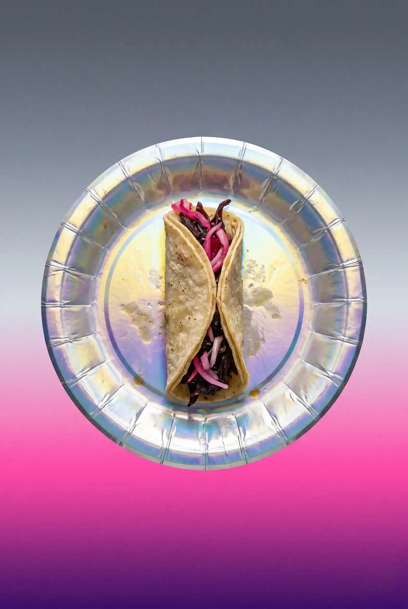
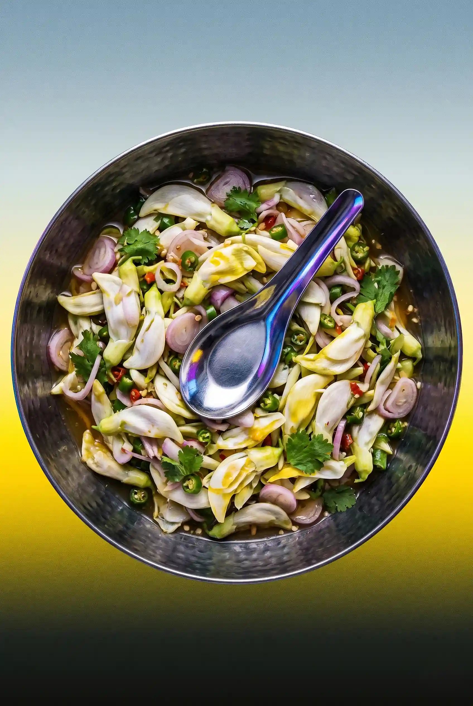
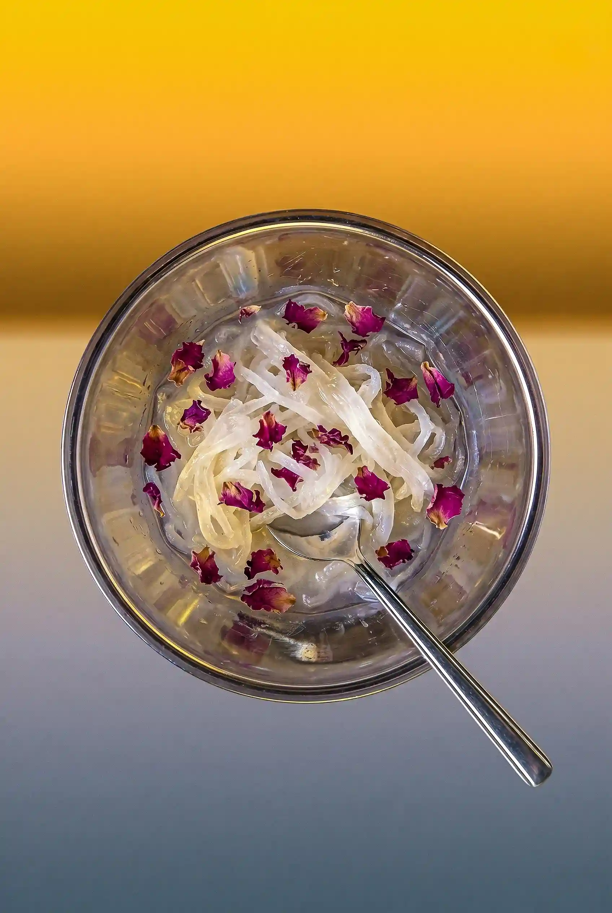
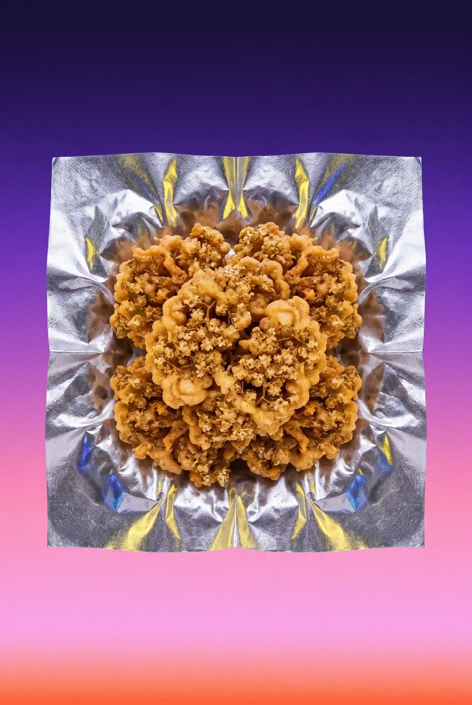
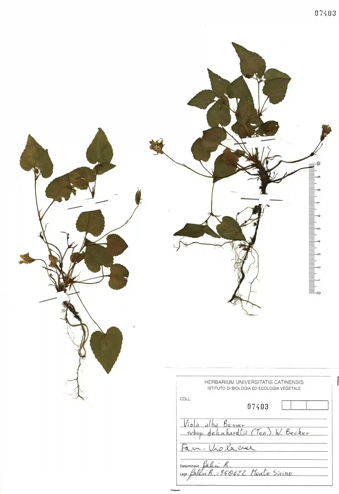
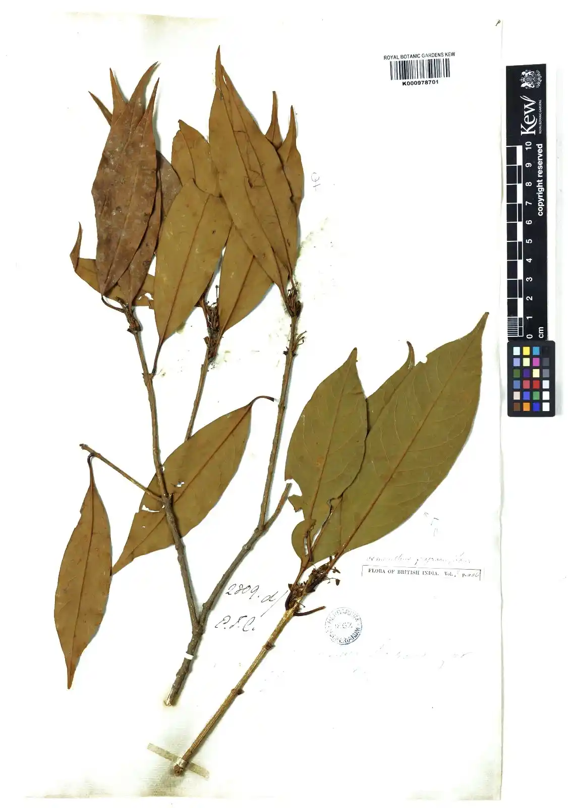
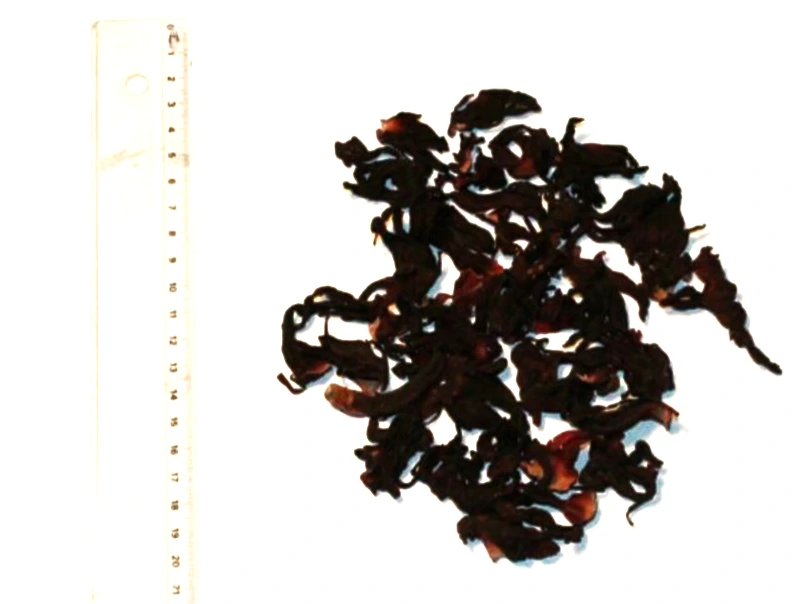
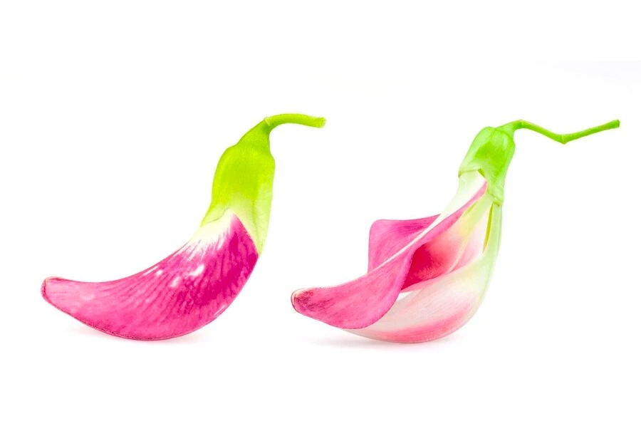
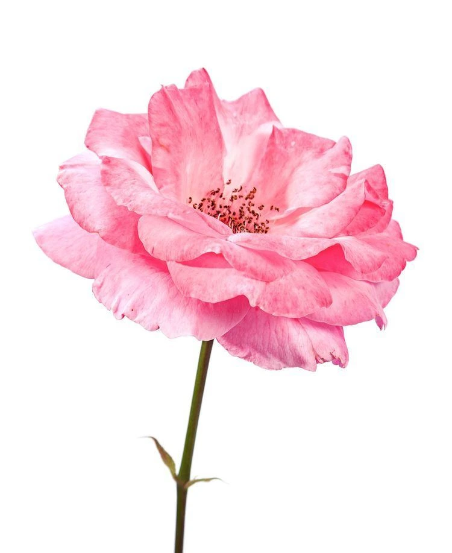

-
Violettes de Toulouse
Violet candies from Toulouse

Sweet
48h
Viola alba subsp. dehnardtii
Violettes de Toulouse are a type of candied violet flower that originated in the city of Toulouse, France. They are made by coating violet petals in sugar, creating a sweet and fragrant treat that is often enjoyed as a confection or used as a decorative element in desserts.

-
桂花糕
Osmanthus Flower Jelly

Sweet
3h
Osmanthus fragrans
Osmanthus Flower Jelly is a traditional Chinese dessert made from the flowers of the osmanthus tree. It has a delicate floral aroma and a smooth, gelatinous texture.

-
Tacos de Flor de Jamaica
Jamaica Flower Tacos

Savory
45min
Hibiscus sabdariffa
Jamaica Flower Tacos are a traditional Mexican dish made with the flowers of the jamaica plant. They have a tart, fruity flavor and are often served as a snack or appetizer.

-
ยำดอกแค
Sesbania Flower Spicy Salad

Spicy
30min
Sesbania grandiflora
Sesbania Flower Spicy Salad is a vibrant, traditional Thai dish. It’s a wonderful mix of textures, often featuring shrimp or ground pork tossed with the delicate blossoms.

-
فالوده
Faloodeh

Sweet
5h
Rosa × damascena
Faloodeh is a traditional Iranian dessert made with vermicelli noodles, rose water, and sugar. It has a unique texture and a delightful floral flavor.

-
Hollerkücherl
Elderflower Fritters

Sweet
25min
Sambucus nigra
Elderflower Fritters are a seasonal Bavarian delicacy made by frying whole elderflower clusters in a light, lacy batter. They offer a refined flavor profile of honey, lychee, and pear, finished with a crisp, savory crunch and a dusting of cinnamon sugar.